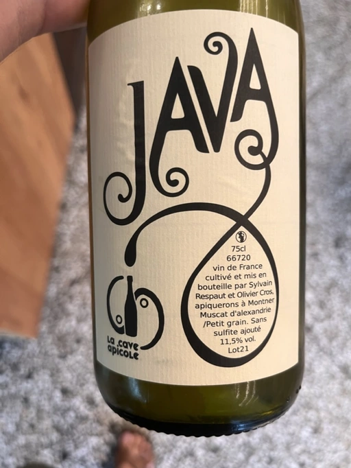

- Type
- White Still, Dry
- Producer
- La Cave Apicole
- Vintage
- 2021
- Location
- France, Vin de Table
- Grapes
- Zibibbo
- Alcohol
- 11.5
- Sugar
- 0
- Price
- 690 UAH
- Cellar
- N/A
Ratings
2022-08-19 - 7.00
A casual ‘natural’ story by muscat: tropical fruits mixed with pickles and yeast flakes (those that smell like cheese). Easy, not demanding. Acidity is medium-high but unfocused, so it’s not as refreshing as it could be.
Related